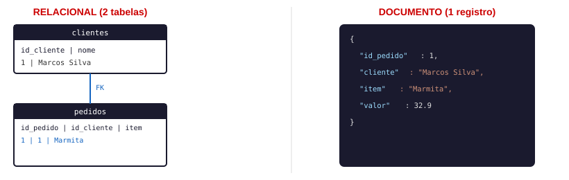
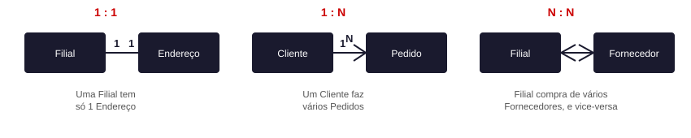
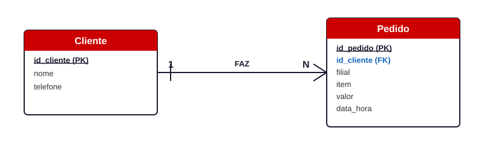
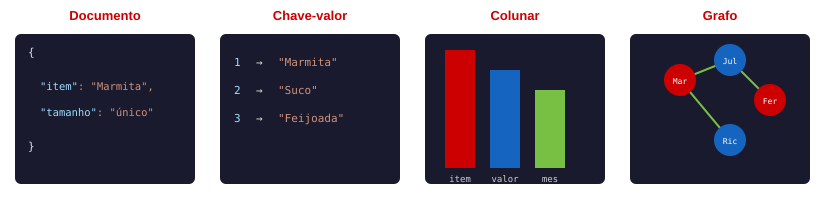

Competência da Unidade Curricular
Você já sabe transformar dado limpo em gráfico e montar um pipeline ETL simples (Semana 07). Esta semana muda de ambiente: o Restaurante Sabor Caseiro, que até aqui te mandou um arquivo por vez, passa a guardar a informação de verdade num banco de dados — e você aprende a modelar essa informação antes mesmo de escrever qualquer comando SQL.
Objetivos da Semana
- Entender a diferença entre banco relacional e NoSQL, entre OLTP e OLAP, e como bancos analíticos organizam dado em fato e dimensão
- Instalar e configurar o PostgreSQL e o pgAdmin, e testar a conexão a partir do Python
- Modelar entidades, atributos (e seus tipos de dado), relacionamentos e cardinalidade — a base de um DER
- Conhecer os 4 modelos de banco NoSQL: documento, chave-valor, colunar e grafo
🧭 De onde você vem: fechando o Bloco 4
Antes de entrar na Semana 08, vale reforçar de onde você está vindo e pra onde está indo dentro do curso.
O que você viu e estudou na Semana 07: o mesmo dre_consolidado.csv do Restaurante Sabor Caseiro, já limpo desde a Semana 06, virando gráfico com Matplotlib (linha, barra, dispersão, customização, subplots e exportação). Você também aprendeu a organizar código em funções reutilizáveis e conheceu sua primeira classe (class, __init__, self, método), e fechou com um pipeline ETL completo — Extract, Transform, Load — carregando o resultado num banco sqlite3 e consultando com um primeiro SELECT.
O que você fez: criou gráficos customizados e exportados em .png, escreveu uma classe do zero, e montou 2 pipelines ETL de ponta a ponta (um salvando em CSV, outro num banco sqlite3), fechando o Mini Projeto do módulo.
Qual era o objetivo: te dar as ferramentas pra comunicar um dado já limpo (gráfico) e organizar o código que faz esse trabalho (funções, classes, pipeline) de ponta a ponta.
Onde você está agora: encerrando o Módulo Básico e abrindo o Bloco 5 desta UC — o bloco final, sobre Bancos de Dados, SQL e integração Python-PostgreSQL. A Semana 08, que começa agora, resolve a pergunta que ficou em aberto no sqlite3 da Semana 07: como um banco de dados de verdade guarda e organiza a informação.
🔄 Retomada — o que vimos na Semana 07
Você já sabe transformar dado limpo em gráfico com Matplotlib, organizar código em funções e classes, e montar um pipeline ETL simples salvando o resultado num banco sqlite3. Esta semana usa essa base: o SELECT * FROM despesas WHERE valor > 30000 que você rodou no fechamento da Semana 07 foi sua primeira consulta SQL — esta semana explica, antes de tudo, COMO um banco de dados guarda a informação que aquele SELECT consultou.
🟢 Abertura — Semana 08: Banco de Dados Relacionais e Não Relacionais
Começa o Bloco 5, o bloco final do curso! Nesta semana você entende como bancos de dados relacionais e não relacionais organizam a informação, instala o PostgreSQL e o pgAdmin na sua máquina, e aprende a modelar — no papel e em código — as entidades, atributos e relacionamentos do Restaurante Sabor Caseiro antes de guardar qualquer dado de verdade num banco.
O que você vai aprender nesta semana:
- A diferença entre banco relacional e NoSQL, entre OLTP e OLAP, e a organização em fato e dimensão
- Instalar e configurar o PostgreSQL e o pgAdmin, e testar a conexão a partir do Python
- Modelagem conceitual: entidades, atributos, tipos de dado, relacionamentos, cardinalidade e o DER
- Modelagem NoSQL: documento, chave-valor, colunar e grafos
📌 Ambiente e dataset desta semana
Esta semana roda no VS Code local, não no Google Colab. O Google Colab não mantém um serviço de banco de dados instalado e rodando entre sessões — e a partir de agora você vai conectar o Python a um PostgreSQL de verdade, instalado na sua própria máquina. Se você ainda não tem o VS Code e o Python configurados localmente, retome o GUIA_GITHUB.md (raiz do repositório) e o material da Semana 03 antes de continuar.
Esta semana usa um arquivo novo do Restaurante Sabor Caseiro: pedidos_sabor_caseiro.csv, com 18 pedidos das 2 filiais já conhecidas (Centro e Zona Sul), com as colunas id_pedido, cliente, filial, item, valor e data_hora. Diferente do dre_consolidado.csv (o relatório mensal consolidado que você já conhece, da Semana 06), este arquivo é o tipo de dado que o restaurante gera a cada venda individual — e essa diferença é exatamente o assunto da Seção 1.
dataset/pedidos_sabor_caseiro.csv— 18 linhas, um pedido por linhadataset/dre_consolidado.csv— o mesmo relatório consolidado da Semana 07 (você usa de novo, como contraste)
1. Banco de Dados Relacional x Não Relacional (NoSQL) — e OLTP x OLAP
O que é, afinal, um banco de dados?
Até agora, todo dado que você usou no curso morava num arquivo — um CSV, um JSON, uma planilha Excel — que você abria com pd.read_csv() (ou equivalente), lia, e fechava. Um banco de dados é um programa diferente: fica sempre ligado, rodando em segundo plano, guardando o dado de forma organizada e permitindo que várias pessoas (ou vários programas, ao mesmo tempo) leiam e alterem essa informação sem esbarrar uma na outra — e sem correr o risco de duas pessoas sobrescreverem o mesmo arquivo sem perceber.
É por isso que o Restaurante Sabor Caseiro, que até aqui te mandou um CSV por vez para você limpar e analisar, passa a guardar a informação de verdade num banco: conforme o número de pedidos cresce e mais gente (caixa, cozinha, gerência) precisa consultar e atualizar esse dado ao mesmo tempo, um arquivo solto não aguenta o volume nem o número de pessoas mexendo nele junto.
Um banco de dados relacional guarda a informação em tabelas: linhas (registros) e colunas (atributos), com uma estrutura fixa definida antes de qualquer dado entrar — o chamado esquema (schema). PostgreSQL, MySQL e SQL Server são bancos relacionais. Um banco de dados não relacional (NoSQL) guarda a informação em outros formatos — documento, chave-valor, colunar ou grafo (você vê os 4 na Seção 4) — geralmente sem exigir um esquema fixo antes de gravar. MongoDB, Redis e Cassandra são bancos NoSQL.

Relacional separa cliente e pedido em 2 tabelas ligadas pela FK; documento guarda tudo junto, num registro só.
Além do formato, existe outra pergunta importante: para que aquele dado vai ser usado?
| Sigla | Nome completo | Para que serve | Exemplo no Sabor Caseiro |
|---|---|---|---|
| OLTP | Online Transaction Processing | Registrar operações do dia a dia, uma de cada vez, rápido | Cada pedido sendo lançado no caixa (pedidos_sabor_caseiro.csv) |
| OLAP | Online Analytical Processing | Analisar um grande volume de dados já acumulado, para tomar decisão | O relatório mensal consolidado que a diretoria usa (dre_consolidado.csv) |
Um sistema OLTP prioriza velocidade de gravação e a exatidão de um registro por vez; um sistema OLAP prioriza consultas agregadas sobre muitos registros de uma vez — a mesma soma com groupby() que você já faz desde a Semana 05.
Bancos analíticos organizam o dado em fato e dimensão
Um banco OLAP normalmente separa a informação em 2 tipos de tabela: a tabela fato guarda os eventos que você quer medir — números que dá pra somar, contar, tirar média (ex.: cada pedido, com seu valor); as tabelas dimensão guardam o "quem, o quê, quando" que descreve aquele evento (ex.: o cliente que fez o pedido, o item pedido, o mês em que aconteceu).
| Tabela | Tipo | O que guarda |
|---|---|---|
fato_pedidos | Fato | 1 linha por pedido: id_cliente (FK), id_item (FK), id_tempo (FK), valor |
dim_cliente | Dimensão | id_cliente, nome |
dim_item | Dimensão | id_item, nome_item |
dim_tempo | Dimensão | id_tempo, data, mes, ano |
Esse jeito de organizar (1 tabela fato cercada de tabelas dimensão) se chama esquema estrela — é assim que o dre_consolidado.csv que você já usou nas Semanas 06 e 07 foi construído por trás: os valores agregados (fato) cruzados com filial/mês/categoria (dimensões).
Exemplo 1 — O mesmo pedido, representado como dado relacional
clientes (1 registro por cliente) e uma tabela pedidos (1 registro por pedido, guardando só o id_cliente, não o nome do cliente de novo). pedidos[["cliente"]].drop_duplicates() pega só a coluna cliente e remove as repetições, sobrando 1 linha por cliente; .reset_index(drop=True) renumera o índice do zero, e clientes.index + 1 cria a coluna id_cliente — o mesmo papel de "código único" que uma chave primária tem num banco relacional. .merge(clientes, on="cliente") — o mesmo comando de combinar tabelas que você já usa desde a Semana 05 — devolve id_cliente para dentro da tabela de pedidos.
import pandas as pd
pedidos = pd.read_csv("dataset/pedidos_sabor_caseiro.csv")
clientes = pedidos[["cliente"]].drop_duplicates().reset_index(drop=True)
clientes["id_cliente"] = clientes.index + 1
display(clientes)
tabela_pedidos = pedidos.merge(clientes, on="cliente")[["id_pedido", "id_cliente", "filial", "item", "valor", "data_hora"]]
display(tabela_pedidos.head())
Exemplo 2 — O mesmo pedido, representado como documento NoSQL
json, nativo do Python, tem a função dumps(), que transforma um dicionário Python num texto formatado JSON — o mesmo formato de arquivo que você já leu na Semana 04; indent=2 organiza o texto com recuo, e ensure_ascii=False mantém os acentos.
import pandas as pd
import json
pedidos = pd.read_csv("dataset/pedidos_sabor_caseiro.csv")
primeiro_pedido = pedidos.iloc[0]
documento = {
"id_pedido": int(primeiro_pedido["id_pedido"]),
"cliente": primeiro_pedido["cliente"],
"filial": primeiro_pedido["filial"],
"item": primeiro_pedido["item"],
"valor": float(primeiro_pedido["valor"]),
"data_hora": primeiro_pedido["data_hora"],
}
print(json.dumps(documento, indent=2, ensure_ascii=False))
pedidos_sabor_caseiro.csv, filtre o pedido de id_pedido igual a 5 e monte as duas representações — relacional e documento — para comparar lado a lado.
2. PostgreSQL e pgAdmin — Instalação, Configuração e Primeira Conexão
Até aqui você só instalou bibliotecas Python (pandas, openpyxl...) — bastava um %pip install e pronto, dentro do próprio notebook. O PostgreSQL é diferente: é um programa completo, separado do Python, que fica rodando sozinho em segundo plano na sua máquina (chamado de servidor, porque "serve" pedidos de outros programas) esperando alguém — o pgAdmin, o Python, ou qualquer outro programa — se conectar nele. Se esse programa não estiver rodando, nada mais nesta seção funciona.
- PostgreSQL — o SGBD (Sistema Gerenciador de Banco de Dados): o programa que guarda e organiza os dados de verdade. Um único PostgreSQL pode hospedar vários bancos de dados diferentes ao mesmo tempo — é por isso que ele já vem, por padrão, com um banco chamado
postgres, e você ainda vai criar um outro, separado, chamadosabor_caseiro. - pgAdmin — um programa à parte, com tela e botões, que te deixa ver e mexer no PostgreSQL sem digitar comando nenhum.
- psycopg2 — a biblioteca Python que serve de ponte entre o seu código e o PostgreSQL.
- SQL — a linguagem usada para pedir e alterar dado dentro de um banco relacional. Você já viu uma prévia dela no fechamento da Semana 07 (
SELECT * FROM despesas WHERE valor > 30000); aqui você só confirma que consegue "conversar" com o banco, e aprofunda a sintaxe de verdade nas Semanas 09-10.
Passo a passo — instalação do PostgreSQL (fora do notebook, Windows)
- Baixe o instalador oficial em
https://www.postgresql.org/download/windows/— clique em "Download the installer" (site da EDB, mantenedora do instalador oficial para Windows). Escolha a versão mais recente disponível. - Rode o instalador e siga o assistente ("Setup Wizard"). Mantenha marcados os componentes padrão: PostgreSQL Server, pgAdmin 4 e Command Line Tools.
- Numa das telas, o instalador pede uma senha para o usuário
postgres— o administrador padrão. Anote com cuidado: você vai digitá-la toda vez que conectar. - Mantenha a porta padrão,
5432— o número que identifica onde o PostgreSQL espera conexões (como um ramal de telefone). - Ao final, o instalador pode abrir o Stack Builder, oferecendo drivers extras — você não precisa de nada dali; pode fechar sem problema.
- O PostgreSQL já fica rodando automaticamente como um serviço do Windows. Para confirmar: abra o menu Iniciar, digite Serviços (ou
services.msc), procurepostgresql-x64-...e confira se o Status diz "Em execução". Sempre que a conexão falhar mais adiante, volte aqui primeiro.
postgres e, separadamente, com um banco de dados que também já se chama postgres — são 2 coisas diferentes com o mesmo nome. Neste curso você não vai usar esse banco postgres padrão: no próximo passo, você cria um banco novo, com outro nome (sabor_caseiro).
Primeiro acesso ao pgAdmin e criação do banco sabor_caseiro
- Abra o pgAdmin 4 (instalado junto, no passo 2 acima).
- Na primeira vez que abrir, ele pede uma Master Password — uma senha NOVA, exclusiva do próprio pgAdmin. É diferente da senha do usuário
postgresdefinida na instalação — crie uma e guarde; ela só serve para abrir o pgAdmin, sem relação com o Python. - No painel esquerdo ("Object Explorer"), expanda Servers → clique no servidor pré-cadastrado ("PostgreSQL 1x") → digite a senha do usuário
postgresquando for pedida. - Com o servidor conectado, clique com o botão direito em "Databases" → Create → Database... → em "Database", digite
sabor_caseiro→ Save. - Confira visualmente antes de continuar: o banco
sabor_caseiroprecisa aparecer na árvore à esquerda, dentro de "Databases". Só depois disso, siga para os exemplos de código abaixo.
Exemplo 1 — Testando a conexão com Python
psycopg2 não vem instalada por padrão, por isso a primeira linha instala a variante psycopg2-binary. psycopg2.connect(...) abre uma conexão recebendo host (localhost, porque o banco está na sua própria máquina), dbname (sabor_caseiro, não o banco postgres padrão), user e password. conexao.cursor() cria um cursor — o objeto usado para executar comandos SQL. cursor.execute("SELECT version();") roda esse comando (só para confirmar que a conexão funciona), e cursor.fetchone() busca a primeira linha do resultado. Repare que o import psycopg2 está DENTRO do try: se você esqueceu de rodar a célula %pip install, o Python levanta um ModuleNotFoundError ali mesmo — por isso também é capturado, junto com o OperationalError que aparece quando o PostgreSQL não está rodando ou algum dado de conexão está errado.
%pip install psycopg2-binary
try:
import psycopg2
conexao = psycopg2.connect(
host="localhost",
dbname="sabor_caseiro",
user="postgres",
password="SUA_SENHA_AQUI",
)
cursor = conexao.cursor()
cursor.execute("SELECT version();")
print("Conectado! Versão do PostgreSQL:", cursor.fetchone()[0])
conexao.close()
except ModuleNotFoundError:
print("psycopg2 ainda não foi instalado nesta sessão — rode a célula %pip install acima e execute de novo.")
except psycopg2.OperationalError as erro:
print("Ainda não conectou. Confira, nos Serviços do Windows, se 'postgresql-x64-...' está 'Em execução', e se host/usuário/senha/banco estão corretos.")
print(f"Erro real do Python: {erro}")
except psycopg2.OperationalError existe porque, sem o PostgreSQL rodando (ou com a senha errada), é exatamente esse erro que aparece — algo como connection to server at "localhost" (...), port 5432 failed: Connection refused. Rodar essa célula sem o PostgreSQL instalado ainda é normal: é assim que você confirma, mais tarde, que o setup funcionou — quando a mensagem virar "Conectado!".
Exemplo 2 — Listando as tabelas que já existem no banco
information_schema. A consulta SELECT table_name FROM information_schema.tables WHERE table_schema = 'public'; pede os nomes de todas as tabelas do "esquema público" — aqui, "esquema" tem um sentido um pouco diferente do "esquema" da Seção 1 (lá era a estrutura de colunas de uma tabela; aqui é mais como uma pasta dentro do banco, que agrupa tabelas). Não se preocupe em decorar essa diferença agora. cursor.fetchall() busca todas as linhas do resultado (diferente do fetchone() do Exemplo 1).
try:
import psycopg2
conexao = psycopg2.connect(
host="localhost", dbname="sabor_caseiro", user="postgres", password="SUA_SENHA_AQUI",
)
cursor = conexao.cursor()
cursor.execute("SELECT table_name FROM information_schema.tables WHERE table_schema = 'public';")
tabelas = cursor.fetchall()
print("Tabelas encontradas:", tabelas if tabelas else "nenhuma ainda (você cria a primeira na Semana 09)")
conexao.close()
except ModuleNotFoundError:
print("psycopg2 ainda não foi instalado nesta sessão.")
except psycopg2.OperationalError as erro:
print("Ainda não conectou. Confira o serviço do PostgreSQL e os dados de conexão.")
print(f"Erro real do Python: {erro}")
sabor_caseiro, e rode a célula de conexão trocando "SUA_SENHA_AQUI" pela sua senha, até ver "Conectado!".
- Nos Serviços do Windows,
postgresql-x64-...aparece como "Em execução" - O pgAdmin conecta no servidor sem erro de senha
- O banco
sabor_caseiroaparece na árvore do pgAdmin, dentro de "Databases" - A célula da Atividade Prática 2 (no notebook) imprimiu "Conectado! Versão do PostgreSQL: ..."
3. Modelagem Conceitual — Entidades, Atributos, Relacionamentos, Cardinalidade e DER
| Termo | O que é | Exemplo no Sabor Caseiro |
|---|---|---|
| Entidade | Um "tipo de coisa" sobre a qual o negócio precisa guardar informação | Cliente, Pedido, Filial |
| Atributo | Uma característica de uma entidade | Cliente tem nome, telefone; Pedido tem valor, data_hora |
| Relacionamento | Como 2 entidades se conectam | Um Cliente FAZ um Pedido |
| Cardinalidade | Quantas vezes cada lado do relacionamento pode se repetir | Um Cliente pode fazer VÁRIOS Pedidos |
Cada atributo tem um tipo de dado — o que aquela coluna pode guardar. Você já usa essa mesma ideia em Python (int, float, str, bool); um banco relacional formaliza isso: a coluna só aceita aquele tipo, sempre, porque o esquema (Seção 1) é fixo.
| Tipo de dado | O que guarda | Exemplo no Sabor Caseiro |
|---|---|---|
| Texto | Letras, palavras, texto livre | nome, filial, item |
| Número inteiro | Números sem casa decimal | id_pedido, id_cliente |
| Número decimal | Números com casa decimal (dinheiro, medidas) | valor |
| Data/hora | Uma data e/ou um horário | data_hora |
| Booleano | Verdadeiro ou falso, sem meio-termo | pedido_entregue (exemplo hipotético — não está no CSV) |
Você declara o tipo de cada coluna na hora de criar a tabela de verdade, no comando CREATE TABLE (isso começa na Semana 09) — por enquanto, é só reconhecer que todo atributo tem um tipo, mesmo antes de qualquer SQL.
Existem 3 tipos de cardinalidade:
| Cardinalidade | Significado | Exemplo |
|---|---|---|
| 1:1 | Um registro de A se relaciona com no máximo 1 registro de B | Uma Filial tem 1 endereço |
| 1:N | Um registro de A se relaciona com vários de B, mas cada B pertence a só 1 A | Um Cliente faz vários Pedidos; cada Pedido é de 1 só Cliente |
| N:N | Vários registros de A se relacionam com vários registros de B | Uma Filial compra de vários Fornecedores; um Fornecedor vende para várias Filiais |
As 3 cardinalidades, visualmente:

O DER (Diagrama Entidade-Relacionamento) é o desenho que representa entidades (retângulos), atributos e relacionamentos com a cardinalidade marcada — normalmente feito no próprio pgAdmin, no menu Tools → ERD Tool (desenha o diagrama visualmente, com o mouse), ou numa ferramenta online como o dbdiagram.io, antes de escrever qualquer CREATE TABLE (isso começa na Semana 09). É assim que ele se parece de verdade:

Leitura: um Cliente (1) pode FAZER vários Pedidos (N); cada Pedido pertence a um único Cliente. O sublinhado marca a chave primária (PK); a cor azul marca a chave estrangeira (FK), que aponta de volta para a PK de Cliente.
Exemplo 1 — Descrevendo as entidades do Sabor Caseiro em código
PK (chave primária, de Primary Key) é o atributo que identifica de forma única cada linha da própria tabela — como o id_cliente que você criou na Seção 1. FK (chave estrangeira, de Foreign Key) é uma coluna que aponta para a PK de outra tabela, criando o relacionamento entre elas.
entidades = {
"Cliente": {
"atributos": ["id_cliente (PK)", "nome", "telefone"],
},
"Pedido": {
"atributos": ["id_pedido (PK)", "id_cliente (FK)", "filial", "item", "valor", "data_hora"],
},
}
for nome_entidade, detalhes in entidades.items():
print(f"Entidade: {nome_entidade}")
for atributo in detalhes["atributos"]:
print(f" - {atributo}")
Exemplo 2 — Descrevendo o relacionamento e a cardinalidade
relacionamento guarda quem participa, como o relacionamento se chama e a cardinalidade. O print() monta, a partir desses valores, a mesma frase que você diria olhando para um DER desenhado.
relacionamento = {
"entidade_origem": "Cliente",
"entidade_destino": "Pedido",
"verbo": "FAZ",
"verbo_infinitivo": "fazer",
"cardinalidade": "1:N",
}
print(f"{relacionamento['entidade_origem']} (1) --{relacionamento['verbo']}--> (N) {relacionamento['entidade_destino']}")
print(
f"Leitura: um(a) {relacionamento['entidade_origem']} pode {relacionamento['verbo_infinitivo']} vários(as) "
f"{relacionamento['entidade_destino']}(s); cada {relacionamento['entidade_destino']} pertence a um(a) único(a) "
f"{relacionamento['entidade_origem']}."
)
fornecedores_despesas.csv da Semana 06. Cada filial compra de vários fornecedores, e cada fornecedor pode vender para mais de uma filial. Comando: no notebook, monte as entidades Filial e Fornecedor (com atributos) e o relacionamento entre elas, com a cardinalidade correta.
4. Modelagem NoSQL — Documento, Chave-Valor, Colunar e Grafos
| Modelo | Como guarda o dado | Quando usar | Exemplo real |
|---|---|---|---|
| Documento | Um registro inteiro, aninhado, num único arquivo (geralmente JSON) | Registros com estrutura flexível, que mudam de um item para outro | MongoDB |
| Chave-valor | Uma chave única aponta direto para um valor | Buscas muito rápidas por 1 identificador (cache, sessão) | Redis |
| Colunar | Os dados organizados por coluna, não por linha | Agregações rápidas sobre muitos registros (somar, contar) | Cassandra |
| Grafo | Nós (entidades) e conexões (relacionamentos) entre eles | Quando o que importa é a rede de relacionamentos em si | Neo4j |
MongoDB, Redis, Cassandra e Neo4j não são conceitos abstratos — são produtos de banco de dados reais, cada um especializado num desses 4 modelos, usados por empresas de todos os tamanhos no mercado (do mesmo jeito que PostgreSQL e MySQL são produtos reais de banco relacional).

Documento: registro inteiro aninhado · Chave-valor: busca direta por id · Colunar: cada coluna guardada junto (agregação rápida) · Grafo: nós (clientes) e conexões (indicações) entre eles.
Exemplo 1 — Documento e Chave-Valor
.to_dict(), numa linha de um DataFrame, converte aquela linha num dicionário Python. O dicionário cache_pedidos é um exemplo de chave-valor: {chave: valor for ...} é uma dict comprehension — o mesmo padrão de list comprehension que você já usa desde o Bloco 2, construindo um dicionário. pedidos.iterrows() percorre o DataFrame linha por linha.
import pandas as pd
import json
pedidos = pd.read_csv("dataset/pedidos_sabor_caseiro.csv")
pedido_documento = pedidos.iloc[2].to_dict()
print(json.dumps(pedido_documento, indent=2, ensure_ascii=False))
cache_pedidos = {int(linha["id_pedido"]): linha["item"] for _, linha in pedidos.iterrows()}
print(cache_pedidos)
Exemplo 2 — Colunar e Grafos
.to_dict(orient="list"), num DataFrame inteiro, monta 1 lista por coluna — a mesma ideia de "organizar por coluna" que um banco colunar usa para agregar rápido sobre milhões de registros. grafo_indicacoes é um dado inventado, só para ilustrar o formato: cada cliente aponta para uma lista de clientes que ele indicou.
import pandas as pd
pedidos = pd.read_csv("dataset/pedidos_sabor_caseiro.csv")
armazenamento_colunar = pedidos[["item", "valor"]].to_dict(orient="list")
print(armazenamento_colunar)
grafo_indicacoes = {
"Marcos Silva": ["Juliana Alves"],
"Juliana Alves": ["Ricardo Nunes", "Fernanda Costa"],
"Ricardo Nunes": [],
"Fernanda Costa": ["Patrícia Gomes"],
}
for cliente, indicados in grafo_indicacoes.items():
print(f"{cliente} indicou: {indicados if indicados else 'ninguém ainda'}")
5. Treino em Squads — Sexta-feira (Encontro 3)
Cada squad recebe um cenário de negócio diferente, com uma amostra de registros. O desafio: decidir se o cenário pede um banco relacional ou NoSQL, justificando, e modelar as entidades, atributos e o relacionamento principal (com cardinalidade) — repare que cada squad tem, propositalmente, uma cardinalidade diferente.
| Squad | Cenário | Cardinalidade a identificar |
|---|---|---|
| B | Loja de Roupas Online — clientes e pedidos | 1:N |
| C | Streaming de Música — playlists e músicas | N:N |
| D | Clínica Médica — pacientes e prontuários | 1:1 |
| E | Aplicativo de Delivery — usuários e restaurantes | N:N |
🏁 Fechamento — Semana 08
Nesta semana você aprendeu:
- A diferença entre banco relacional e NoSQL, entre OLTP e OLAP, e a organização em fato e dimensão
- Instalar e configurar o PostgreSQL e o pgAdmin, testando a conexão a partir do Python
- Modelar entidades, atributos (e seus tipos de dado), relacionamentos e cardinalidade — a base de um DER
- Os 4 modelos de banco NoSQL: documento, chave-valor, colunar e grafo
Próxima semana: com o modelo pronto na cabeça, a Semana 09 transforma tudo isso em tabelas de verdade — normalização, chaves primárias/estrangeiras, e os primeiros comandos SQL (CREATE TABLE, INSERT, SELECT).
Quiz de Fixação
Responda e clique em Verificar para ver o feedback de cada questão.
1. Qual a principal diferença entre um banco de dados relacional e um NoSQL?
2. Um sistema OLTP é mais indicado para:
3. O que é uma chave estrangeira (FK)?
4. Numa cardinalidade N:N (ex.: Filial e Fornecedor), o que isso significa?
5. Numa tabela fato (banco OLAP), o que normalmente é guardado?
6. Por que um atributo precisa ter um tipo de dado definido?
Exercícios da Semana
sabor_caseiro, e rode a célula de conexão do notebook até ver "Conectado!".
Lista completa (formativa, sem nota) em 04_exercicios.md.